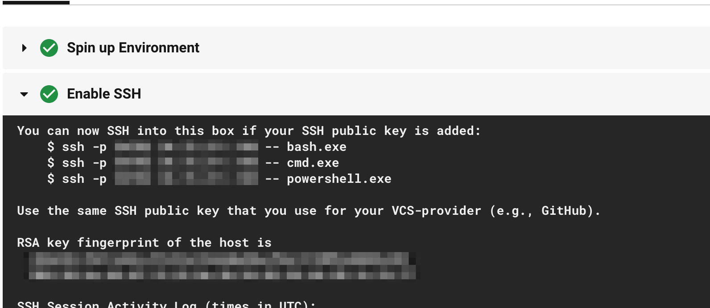

Hello World On Windows
This document describes how to get started with continuous integration on Windows build environments on CircleCI. If this is your first time setting up CircleCI, we recommended checking out the getting started guide.
- Prerequisites
- Overview of the Windows executor
- Example configuration file
- Specifying a Shell with the Windows Executor
- Example Application
- SSH Into Your Build
- Next Steps
- Software pre-installed in the Windows image
Prerequisites
To follow along with this document you will need:
- An account on CircleCI.
- Either the Free plan (default) or a performance plan. If you are running CircleCI Server there are alternative code examples below.
- For the cloud version, pipelines must be enabled for your project to use Windows.
Overview of the Windows executor
The Windows build environment (or executor) gives users the tools to build Windows projects, such as a Universal Windows Platform (UWP) application, a .NET executable, or Windows-specific (like the .NET framework) projects. The following specifications detail the capacities and included features of the Windows executor:
- Is VM-based to guarantee full job isolation.
- Uses the Server Core version of Windows Server 2019 Datacenter Edition.
- Has 4 vCPUS and 15 GB of RAM.
- Powershell is the default shell (Bash and cmd are available to be manually selected).
- Docker Engine - Enterprise is available for running Windows containers.
Note: the Windows executor does not have have support for Docker Layer Caching.
Note: the Windows executor currently only supports Windows containers. Running Linux containers on Windows is not possible for now.
Windows executor images
Currently CircleCI supports a single Windows image: Windows Server 2019 with Visual Studio 2019. Please see the full contents of the image in the list of installed software further along in this document. Contact your systems administrator for details of what is included in CircleCI Server Windows images.
Please note that it is possible to run Windows Docker Containers on the Windows executor like so:
version: 2.1
orbs:
win: circleci/windows@2.2.0
jobs:
build:
executor:
name: win/default
shell: powershell.exe
steps:
- checkout
- run: systeminfo
- run:
name: "Check docker"
shell: powershell.exe
command: |
docker info
docker run hello-world:nanoserver-1809
Known issues
These are the issues with the Windows executor that we are aware of and will address as soon as we can:
- Connecting to a Windows job via SSH and using the
bashshell results in an empty terminal prompt. - It is currently not possible to do nested virtualization (for example, using the
--platform linuxflag).
Example configuration file
Get started with Windows on CircleCI with the following configuration snippet that you can paste into your .circleci/config.yml file:
version: 2.1 # Use version 2.1 to enable orb usage.
orbs:
win: circleci/windows@2.2.0 # The Windows orb give you everything you need to start using the Windows executor.
jobs:
build: # name of your job
executor:
name: win/default # executor type
size: "medium" # resource class, can be "medium", "large", "xlarge", "2xlarge", defaults to "medium" if not specified
steps:
# Commands are run in a Windows virtual machine environment
- checkout
- run: Write-Host 'Hello, Windows'
version: 2
jobs:
build: # name of your job
machine:
image: windows-default # Windows machine image
resource_class: windows.medium
steps:
# Commands are run in a Windows virtual machine environment
- checkout
- run: Write-Host 'Hello, Windows'
From here we will use the version 2.1 syntax to discuss using the Windows executor, but if you’re using Server, you can follow along with the executor definition syntax described above.
Specifying a Shell with the Windows Executor
There are three shells that you can use to run job steps on Windows:
- PowerShell (default in the Windows Orb)
- Bash
- Command
You can configure the shell at the job level or at the step level. It is possible to use multiple shells in the same job. Consider the example below, where we use Bash, Powershell, and Command by adding a shell: argument to our job and step declarations:
version: 2.1
orbs:
win: circleci/windows@2.2.0
jobs:
build:
executor:
name: win/default
steps:
# default shell is Powershell
- run:
command: $(echo hello | Out-Host; $?) -and $(echo world | Out-Host; $?)
shell: powershell.exe
- run:
command: echo hello && echo world
shell: bash.exe
- run:
command: echo hello & echo world
shell: cmd.exe
Note It is possible to install updated or other Windows shell-tooling as well; for example, you could install the latest version of Powershell Core with the dotnet cli and use it in a job’s successive steps:
version: 2.1
orbs:
win: circleci/windows@2.2.0
jobs:
build:
executor: win/default
steps:
- checkout
- run: dotnet tool install --global PowerShell
- run: pwsh ./<my-script>.ps1
Example Application
Let’s consider a more advanced (but still introductory) “hello world” application using the Windows executor. This example application still prints “Hello World” to the console, but does so using .NET core to create an executable, uses dependency caching, and creates an artifact on every build.
You can view the entire configuration here.
version: 2.1
Above, we start by declaring that we will use version 2.1 of CircleCI, giving us access to Orbs and Pipelines.
orbs:
win: circleci/windows@2.2.0
Next, we declare orbs that we will be using in our build. We will only use the windows orb to help us get started.
jobs:
build:
executor:
name: win/default
shell: powershell.exe
Under the jobs key, we set the executor via the orb we are using. We can also declare the default shell to be applied across future steps in the configuration. The default shell is Powershell.exe
steps:
- checkout
In our first step, we run the checkout command to pull our source code from our version control system.
- restore_cache:
keys:
- run:
name: "Install project dependencies"
command: dotnet.exe restore
- save_cache:
paths:
- C:\Users\circleci\.nuget\packages
Next in the config, we make use of caching to restore cached dependencies from previous builds. The command dotnet restore will fetch any dependencies that are not already installed/restored from the cache. Learn more about caching in our caching document.
- run:
name: "Run Build step"
command: dotnet.exe publish -c Release -r win10-x64
- run:
name: "Test the executable"
command: .\bin\Release\netcoreapp2.1\win10-x64\publish\circleci-demo-windows.exe
Next, we run two steps: one to build the executable for Windows 10, and another to test the executable (expecting to see “Hello World” printed to the console).
- store_artifacts:
path: .\bin\Release\netcoreapp2.1\win10-x64\publish\circleci-demo-windows.exe
In our last step, we store the build executable as an artifact, making it accessible with the CircleCI web application or API.
SSH Into Your Build
It is possible to SSH into a Windows build container. This is useful for troubleshooting problems in your pipeline. Follow these steps to SSH into a Windows container:
Steps
-
Ensure that you have added an SSH key to your GitHub or Bitbucket account.
-
To start a job with SSH enabled, select the ‘Rerun job with SSH’ option from the ‘Rerun Workflow’ dropdown menu.
-
To see the connection details, expand the ‘Enable SSH’ section in the job output where you will see the SSH command needed to connect: 
Ensure that you are passing the name of the shell you want to run when you ssh
in. To run cmd.exe in the build above you would run: ssh -p <remote_ip> -- cmd.exe
The available options are:
- powershell.exe
- bash.exe
- cmd.exe
You can read more about using SSH in your builds here.
Next Steps
Also, consider reading documentation on some of CircleCI’s features:
- See the Concepts document for a summary of 2.0 configuration and the hierarchy of top-level keys in a .circleci/config.yml file.
- Refer to the Workflows document for examples of orchestrating job runs with concurrent, sequential, scheduled, and manual approval workflows.
- Find complete reference information for all keys and pre-built Docker images in the Configuring CircleCI and CircleCI Images documentation, respectively.
Software pre-installed in the Windows image
Windows Server 2019 with Visual Studio 2019
- Windows Server 2019 Core Datacenter Edition
- Visual Studio 2019 Community Edition
- Additional licensing terms may apply to your organisation when using this version of Visual Studio on CircleCI. Please review the Visual Studio 2019 Community Edition licensing terms before using this Visual Studio version in your Windows jobs.
- Azure SDK for Visual Studio 2019
- Visual Studio 2019 Build Tools
- Shells:
- Powershell 5
- GNU bash 4.4.231 (x86_64-pc-msys)
- cmd
- .NET Framework 4.8
- .NET Core
- SDK 3.0.100-preview7-012821
- Runtime 3.0.0-preview6-27804-01
- SDK 2.2.401
- Runtime 2.2.6
- SDK 2.1.801
- Git 2.22.0
- Git LFS 2.7.2
- Windows 10 SDK
- 10.0.26624
- 10.1.18362.1
- Docker Engine - Enterprise version 18.09.7
- NuGet CLI 5.2.0.6090
- Chocolatey v0.10.15
- Azure Service Fabric
- SDK 3.3.617.9590
- Runtime 6.4.617.9590
- OpenJDK 12.0.2
- Node.js v12.8.0
- NVM (Node Version Manager)
- Ruby 2.6.3
- Go 1.12.7
- Python 3.7.3
- Miniconda 3
- Text editors
- nano 2.5.3
- vim 8.0.604
- jq 1.5